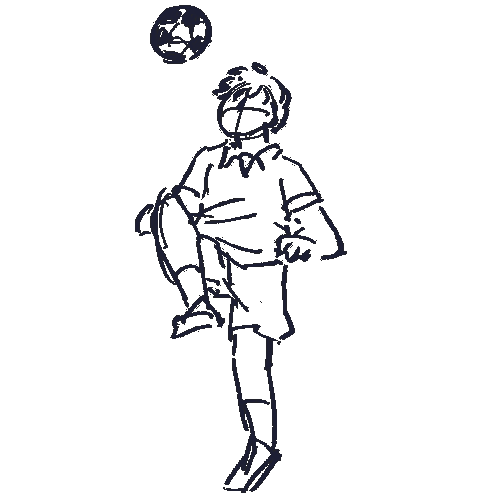

- ―
-
よろしくお願いします。
まずご出身ってどちらの方でした？確か大学って山口大学でしたよね。
- 徳野
- はい。
- ―
- ずっと地元の方にいたんですか。
- 徳野
- はい、そうなんです。
- ―
-
では、ちょっと学生時代の頃から
お話を伺っていきたいと思うんですけど。まず、そうですね、高校とか。
大学生以前のお話で、大体どんな学生だったか、ちょっとお話伺ってもいいですか。
- 徳野
- どんな学生だったか。
そんなに特筆したことはない学生だったと思います。サッカー部に入っていたんですが、特に小中とサッカー部で、小学校3年の頃から始めたんですけども、基本やっぱ中学校、高校の時はほとんど部活のことしか頭になかったな。

- ―
-
じゃあ、大学の方ちょっとお話聞きたいんですけど。山口大学では歴史とかを主に研究されてたんですよね。
- 徳野
- そうですね。
人文社会学だったので、主に歴史。歴史というか、自分としては 歴史そのものに興味があったというよりは、人種問題に興味。
大学生活と、僕は1年生の頃は体育会に入っていたんですけれども。サッカーを続けてたんですけど、怪我しちゃって。で、1年生の終わり、10月ぐらいにはやめちゃって。
- ―
- はい。
- 徳野
- で、そこからは正直あんまりこう、サークルとかにも入る気がしなかったので。
うん。なので、ふらふら、ふらふらして、ちょっと塾の講師のバイトが割と楽しかったので、それを多少やりながら。
あとは、勉強が楽しかったかなっていう感じがしますね。
- ―
- 勉強が楽しかったっていうのはどういう部分ですか。
- 徳野
- 単純に、やっぱり黒人史に出会って、人種問題ってものの興味深さに出会って。暇な1日は図書館から本借りては読んだりとか。
教授さんの部屋にお邪魔してちょっと色々話しを聞いたりして。そういうことが多かった気がしますね。大学生のころは。
- ―
- でも意外と1年の頃、サッカー部のサークルっていうのは、なんかあんまり運動系に見えないので、結構びっくりですね。
- 徳野
- そうですね、サッカー辞めるまではね、今もサッカーは好きなんで。いや、それまではもうほとんどそれのことしか特になかったんです。
- ―
- 大学で色々人種問題とかを研究されてたと思うんですけど、高校の教師になろうっていうのはどこで 考え始めたんですか。
- 徳野
- 大学を卒業してからですね、なんか大学院に進もうと思ってたんですけども。
色々こう、事情あって、卒論を書いてる途中に、ちょっと自分は大学院に今このまま行ったら、黒人史っていうものに真面目に向き合えないなと思ったので、はい。大学を 卒業式の前日にやめて。
- ―
- 結構すごい
- 徳野
- 自分の師匠にすいませんって言ったら、じゃあちょっとアメリカ行って実際のもの見てきたらっていうことで行かせてもらって。
で、自分やっぱ黒人史、人種問題やりたいんだなということで、
支援組織とかNGOとか、そういうところに就職しようかなと思ったんですね。はい。で、募集要項とかを見たら、教員経験が5年以上とか。僕が教育方面から関わりたくて見たら、そういう動きがあって、じゃあ教員になるかっていうことで教員になった。